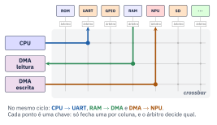

Interconexão¶
Em um SoC (System on Chip), o barramento é a infraestrutura de comunicação que permite que diferentes blocos funcionais troquem informações. Imagine-o como uma rodovia com regras de trânsito bem definidas (o protocolo).

soc_top.vhd): a CPU e o DMA são os mestres; memórias e periféricos são escravos mapeados em memória, ligados pela interconexão crossbar.Mestres e escravos¶
Mestres (Masters)¶
Os Mestres são os componentes que possuem "iniciativa". Eles são responsáveis por iniciar uma transação no barramento (seja um pedido de leitura ou de escrita).
- Core RISC-V: É o mestre principal. Ele solicita instruções para executar (via interface
IMem) e solicita leitura/escrita de dados (via interfaceDMem). - DMA (Direct Memory Access): Um mestre especializado que pode mover grandes blocos de dados entre memórias ou periféricos de forma autônoma, sem sobrecarregar o processador.
Escravos (Slaves)¶
Os Escravos são componentes "reativos". Eles nunca iniciam uma conversa; apenas respondem quando um mestre envia uma solicitação para o seu endereço específico.
- Memórias (RAM/ROM): Armazenam dados e instruções. Respondem com o conteúdo solicitado ou confirmam a gravação de um dado.
- Periféricos (UART, GPIO, VGA, cartão microSD, NPU): Permitem a interação com o mundo exterior. Agem como escravos para que o mestre possa ler status ou configurar seus registradores internos (ex: definir um pino como saída).
Interconectador de Barramento (Bus Interconnect)¶
O bus_interconnect funciona como o "sistema circulatório" do SoC, sendo responsável por conectar o processador aos diversos componentes (memórias e periféricos).
O Papel do Interconectador¶
Guarda de Trânsito
O arquivo bus_interconnect.vhd atua como o "guarda de trânsito". Ele analisa o endereço enviado pelo Mestre e decide para qual Escravo aquela mensagem deve ser entregue, garantindo que a resposta volte corretamente para quem a solicitou.
Crossbar e Arbitragem¶

O bus_interconnect.vhd é um crossbar: cada escravo tem a sua própria arbitragem, então mestres que acessam escravos diferentes são atendidos no mesmo ciclo (a CPU lê a UART enquanto o DMA copia da RAM para a NPU, por exemplo). Só quando dois mestres querem o mesmo escravo é que um deles espera.
Mestres e Interfaces¶
| Interface | Mestre | Acesso | Observação |
|---|---|---|---|
imem_* |
CPU (busca de instruções) | Leitura | Caminho próprio, fora do crossbar: vai direto à porta A da ROM ou da RAM |
cpu_* |
CPU (dados) | Leitura e escrita | we de 4 bits (escrita por byte) |
dma_rd_* |
DMA (leitura) | Só leitura | Lê a origem da cópia |
dma_wr_* |
DMA (escrita) | Só escrita | we de 1 bit, replicado para os 4 bytes |
O DMA aparece duas vezes como mestre (uma porta de leitura e uma de escrita, que trabalham em paralelo) e uma vez como escravo (0x4000_0000), por onde a CPU programa os seus registradores.
Decodificação de Endereços¶
O escravo é escolhido pelos 4 bits mais altos do endereço (addr[31:28]), e cada escravo recebe só os bits de endereço de que precisa:
addr[31:28] |
Escravo | Bits de endereço repassados |
|---|---|---|
0x0 |
Boot ROM | 32 (porta B; a porta A é da busca de instruções) |
0x1 |
UART | 4 |
0x2 |
GPIO | 10 |
0x3 |
VGA | 17 |
0x4 |
DMA (configuração) | 4 |
0x5 |
CLINT | 5 |
0x6 |
PLIC | 24 |
0x7 |
Cartão SD (SPI) | 4 |
0x8 |
RAM | 32 (porta B; a porta A é da busca de instruções) |
0x9 |
NPU | 32 |
0xA |
UART2 (Pmod JA) | 4 |
Endereço não mapeado (bus fault)
Um acesso a uma região sem escravo (0xB a 0xF) é respondido na hora pelo próprio crossbar, com rdy = '1' e dado zero. Assim, um ponteiro errado não trava o mestre esperando um rdy que nunca viria.
Política de Arbitragem¶
Para cada escravo, o crossbar escolhe o dono da transação nesta ordem:
- Trava (sticky lock): se o escravo está no meio de uma transação (ainda não respondeu
rdy), o mestre que a começou continua com ele; - DMA de leitura;
- DMA de escrita;
- CPU.
O DMA tem prioridade porque as suas transferências são longas e sequenciais (alimentam a NPU e a VGA), e a CPU, que normalmente faz poucos acessos espaçados, só perde ciclos quando disputa o mesmo escravo. A trava garante que um mestre de maior prioridade nunca "roube" um escravo lento no meio de uma transação de outro mestre: ela é registrada a cada ciclo em que o escravo ainda está com rdy = '0' e é liberada no ciclo em que ele responde.
Por que arbitrar por escravo
A arbitragem é escrita com o escravo como índice fixo de um laço (desenrolado na elaboração). Assim, a lógica de posse de um escravo não depende da de outro, e o sintetizador não cria caminhos combinacionais artificiais entre escravos sem relação (por exemplo, entre o contador do DMA e a posse do PLIC), o que antes prejudicava o timing.
Protocolo de Sincronização (Handshake)¶
Todas as interfaces usam o mesmo protocolo ready/valid:
vld(Valid): o mestre indica que endereço, dado ewesão válidos e os mantém estáveis;rdy(Ready): o escravo indica que concluiu a transação (e, numa leitura, que o dado está emdata).
Mais informações do protocolo em Ready/Valid
Fluxo de uma Transação¶
- O mestre coloca endereço e dados e sobe
vld; - O crossbar decodifica o endereço, arbitra e liga o mestre ao escravo (ida: endereço, dado,
we,vld; volta: dado,rdy); - O escravo processa no seu tempo (a RAM em um ciclo; periféricos podem levar vários) e sobe
rdy; - O mestre vê
rdy, captura o dado e baixavldno ciclo seguinte; a trava do escravo é liberada.
Sem dupla escrita
Os periféricos respondem com um pulso de rdy de um ciclo e só aceitam uma nova transação quando vld está alto e ainda não responderam (vld_i = '1' and r_rdy = '0'). Como o mestre baixa vld logo depois de ver rdy, o escravo nunca interpreta o mesmo vld como duas transações.
Integração no SoC¶
No soc_top.vhd, o U_BUS liga:
- a busca de instruções da CPU (
s_cpu_imem_*) e a sua porta de dados (s_cpu_dmem_*); - as duas portas de mestre do DMA (
s_dma_m_rd_*es_dma_m_wr_*); - os onze escravos: ROM e RAM (portas A e B), UART, GPIO, VGA, DMA (configuração), CLINT, PLIC, cartão SD, NPU e UART2.
Adicionar um periférico novo é localizado: um valor no tipo slave_t, uma linha na função de decodificação, as atribuições de ida e volta do escravo e as portas no soc_top. A arbitragem e a trava valem automaticamente para ele, como foi feito com o cartão SD em 0x7000_0000.